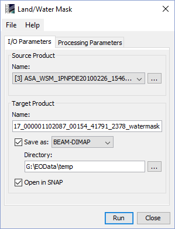
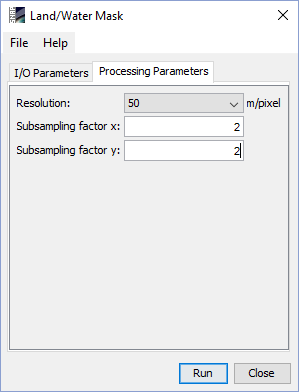

| Processor Description - Land/Water Mask |
|
The Land/Water Mask processor can be invoked in the Sentinel Toolbox from tool menu by selecting
Raster->Mask->Land/Water Mask.
On the command line the Land/Water Mask processor is available by means of the Graph Processing Tool gpt
which is located in the Sentinel Toolbox bin directory.
Typing gpt LandWaterMask -h displays further information.

Source product: Here the user specifies the source product. The combo box presents a list of all products opened in the VISAT. The user may select one of these or, by clicking on the button next to the combo box, choose a product from the file system.
Name: Used to specify the name of the target product.
Save as: Used to specify whether the target product should be saved to the file system. The combo box presents a list of available file formats. The text field or the button next to it allow to specify a target directory.
Open in VISAT: Used to specify whether the target product should be opened in VISAT. When the target product is not saved, it is opened in VISAT automatically.

Resolution: Select one of the available resolutions from the predefined list. Defines the resolution and the origin of the source land/water map. Available resolutions are 50 meter, 150 meter and 100 meter per pixel. For more explanation on the source data see the Land/Water Mask Algorithm Specification
Subsampling factor x: Specifies in how many sub-pixel each pixel of the input is sub-sampled in x-direction. A value of '1' means no sub-sampling at all.
Subsampling factor y: Specifies in how many sub-pixel each pixel of the input is sub-sampled in y-direction. A value of '1' means no sub-sampling at all.